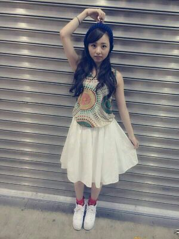
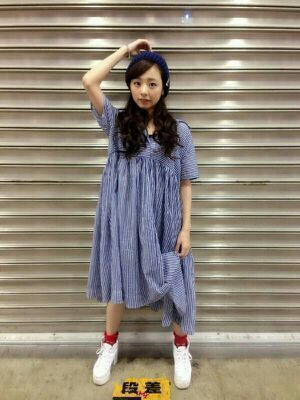

| 2014/08 03 Sun | 〜19歳 初の握手会 〜私服〜 ろってぃー.♪ |
こんばんわ〜\(#^.^#)/
まに or ろってぃーです ..*
ど−も 。
昨日, 『 乃木坂46SHOW! 』見てくれたかなん？
そしてそして、昨日は 個別握手会でした..*
たくさんの人間と にぎにぎできた
 わら
わら
ありがとう..*
それで、今回のまに私服は、、、、

大好きな帽子..*
毎日 帽子かぶってる.最近.
赤色の靴下..*近くで見たら金魚みたいで可愛いの.
白の膝たけスカート.はい、シンプル
上の服可愛いでしょ？
これはいったい 何の柄なんだろう？花火？不思議..*
丈が長いからスカートの中にインしてるの.♪
もう１着がこちら //
ゆったりぃ 〜 (*´ω｀*)

青と白のほそ〜い ストライプ たてじま..*
本当に 軽い 涼しい素材 楽チン 可愛い..*
どうですか〜
 ？
？
あれ〜 浴衣は〜？
って思ってるそこのあなた〜
浴衣着なかったよ〜.♪
だって 絶対に皆 浴衣きてくるやろうな〜.♪と思ったんだもん.♪ 案の定 皆 浴衣だった.
私〜 あまのじゃくなんですよね〜
人の 逆,逆にいっちゃうの(・ω・)わら
・・・・・(↑↑↑プリンしパルのコントのセリフ 笑)
は〜い と言うことで今日も１日おつかれさでしたぁぁ.♪
おやすみなさい
 大好きだよ？
大好きだよ？
コメント(176)
2014/08/03 23:59